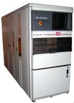

Epitaxy
Epitaxy
or
epitaxial growth is the process of depositing a thin layer (0.5 to 20
microns) of
single crystal
material over a single crystal substrate,
usually through chemical vapor deposition (CVD).
In
semiconductors, the deposited film is often the same material as the
substrate, and the process is known as
homoepitaxy, or simply,
epi.
An example of this is silicon deposition over a silicon substrate.
Silicon
epitaxy is done to improve the
performance
of
bipolar
devices. By
growing a lightly doped epi layer over a heavily-doped silicon
substrate, a higher breakdown voltage across the collector-substrate
junction is achieved while maintaining low collector resistance.
Lower collector resistance allows a higher operating speed with
the same current.
Epitaxy has
also recently been used in CMOS VLSI circuits. By fabricating
the CMOS device on a very thin (3-7 microns) lightly doped epi
layer grown over a heavily-doped substrate,
latch-up
occurrence is
minimized.
Aside from
improving the performance of devices, epitaxy also allows better
control
of
doping concentrations of the devices. The layer can also be
made oxygen- and carbon-free. The disadvantages of epitaxy include
higher cost of wafer fabrication, additional process complexities, and
problems associated with defects in the epi layer.
The chemical
vapor deposition of silicon epitaxy is usually achieved using an
epitaxial
reactor
(Fig. 1) that consists of a quartz reaction chamber into which a
susceptor
is placed. The susceptor provides two things: 1) mechanical
support
for the wafers and 2) an environment with uniform
thermal
distribution. Epitaxial deposition takes place at a
high
temperature as the required
process gases
flow into the chamber.
|
 |
|
Fig.
1. Example of an
Epitaxial Reactor
|
Wafer Fab
Links:
Incoming
Wafers;
Epitaxy;
Diffusion;
Ion
Implant;
Polysilicon;
Dielectric;
Lithography/Etch;
Thin
Films;
Metallization;
Glassivation;
Probe/Trim
See Also:
Epitaxial Deposition Process; Silicon on
Insulators;
IC
Manufacturing; Wafer Fab Equipment
HOME
Copyright
©
2001-2006
www.EESemi.com.
All Rights Reserved.